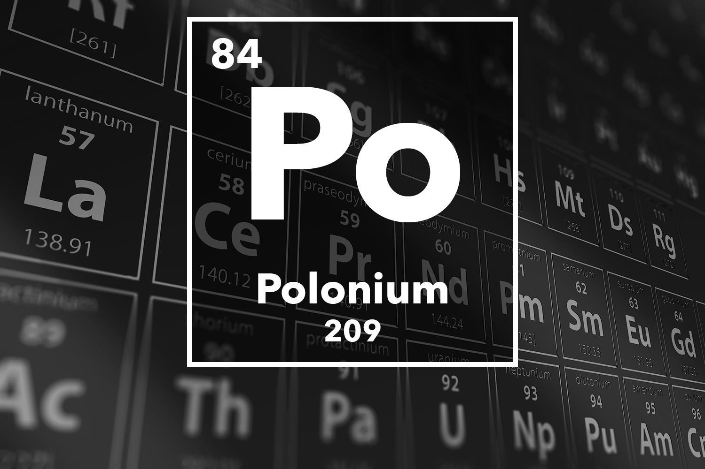

POLONIUM

PROPERTIES
Polonium is a silvery, radioactive metal discovered by Marie Curie in 1898 (along with radium); she named the element after Poland, her native country. Although the
discovery of polonium was to some extent eclipsed by the discovery of radium, polonium is more radioactive than radium by a factor of about 5000. It is found naturally in uranium ore in extremely small amounts; one ton of uranium ore contains about 100 micrograms (0.0001 g) of polonium, making it one of the ten least abundant naturally-occurring elements. For industrial use (primarily to dissipate static electricity), it is produced from the irradiation of bismuth-209 with neutrons to produce bismuth-210, which undergoes beta-decay to produce polonium-210. It is radioactive, and is regarded as one of the deadliest substances known. Polonium is produced in the radioactive decay of radon gas; when the radon is inhaled, it can undergo alpha-decay to produce polonium, which is a solid, and remains trapped within the lungs.
Reaction of Polonium with air
Po(s) + O2(g) PoO2(s)
Reaction of Polonium with halogens
Po(s) + 2 Cl2(g) PoCl4(s) [yellow]
Po(s) + 2 I2(g) PoI4(s) [black]
Po(s) + 2 Br2(g) PoBr4(s) [red]